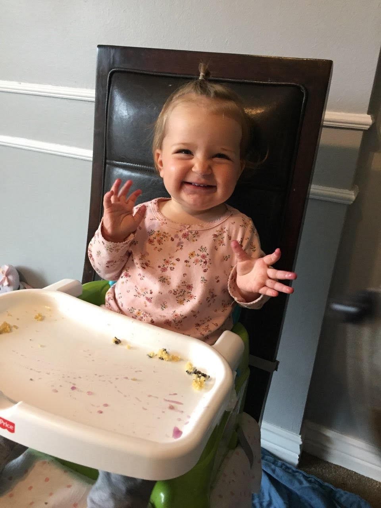
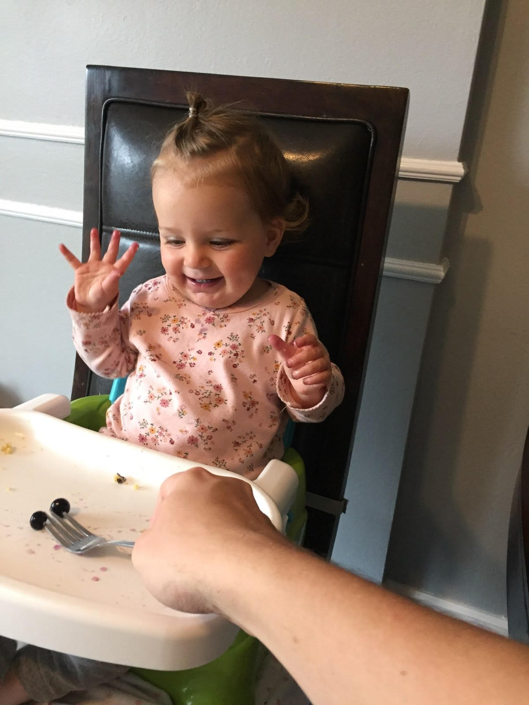
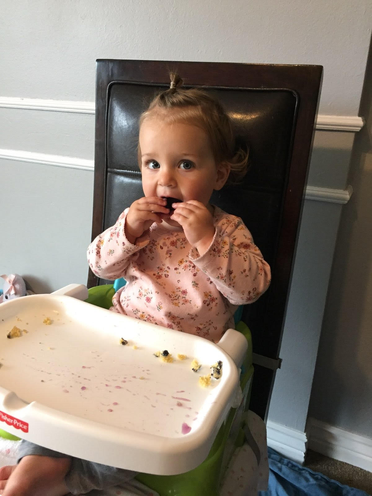
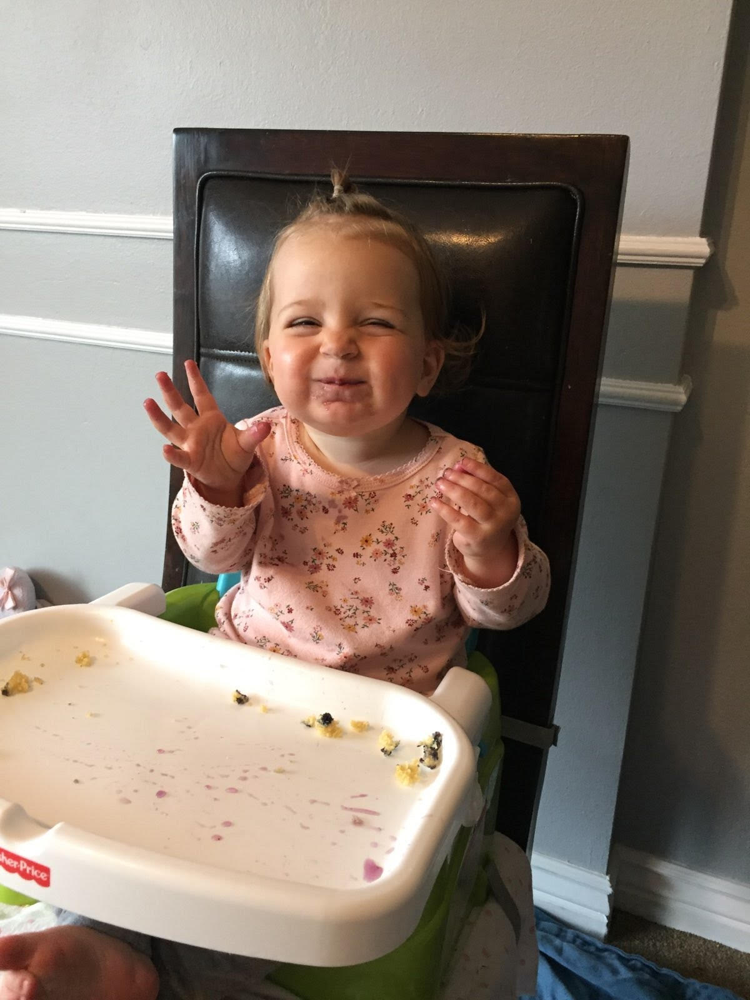

Georgia
June 1 2021
We gave Georgia a blueberry pancake but she only wanted the blueberries. I love how happy they make her!
   
May 5, 2021

Georgia soaks up some rare February sunshine.
Georgia turned 1 a month ago. She brings us unquantifiable amounts of happiness every day.
Her smile and her laugh and her excitement to see me in the morning are among my greatest blessings.
Her greatest desire is to see a cat when she goes outside. She can already say a couple dozen words
(in her own dialect), but the cutest is her own invented expression of delight or contentment, "Doh-dooooo!"
Georgia soaks up some rare February sunshine.